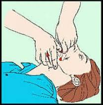

BREATHING PROBLEMS
Treatment
while placing two fingers of the other hand under the chin.

If breathing is absent:
- Pinch victim's nostrils closed and take a deep breath
- completely cover victim's mouth, and give two slow, full breaths
For adult:
- Continue rescue breathing at a rate of one strong every five seconds.
- Re-check for pulse and breathing every twelve breaths.
For infants and small children
- Breathe shallow breaths at a rate of one every three seconds or 20 per minute.
Do CPR

- Place the heel of one hand over the center of the person's chest, between the nipples.
- Place your other hand on top of the first hand.
- Push down in the center of the chest 2 inches 30 times avoiding the ribs
- Pump hard and fast at the rate of at least 100/minute, faster than once per second.
- Clear victims mouth
- Tilt the head back and lift the chin.
- Pinch nose and cover the mouth with yours and blow until you see the chest rise
- Give two rescue breaths